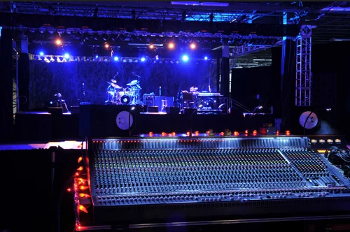

Guitar
Luciano has been playing guitar for close to a decade. He plays a wide variety of styles, specializing in jazz and funk. A seasoned performer, he has played with the Cab Calloway Jazz Band, the Wilmington Youth Jazz Band, carious small jazz ensembles, and the Boyer Electroacoustic Ensemble Project under the direction of Dr. Adam Vidiksis. In 2018, Luciano founded the Hummingbirds Jazz Band, a volunteer group dedicated to bringing music and the arts to community centers and elder care facilities in Wilmington, DE.

Live Sound Engineering
Luciano offers professional live sound engineering for small venues in the Wilmington and Philadelphia area. He has worked with popular event band the Big Ric Revue, and works consistently with music outreach organization Artcinia. He was mentored by prolific live sound engineer John Harris.

Recording and Mixing
In addition to live sound gigs, Luciano works as a recording and mixing engineer. He has worked with Temple University jazz ensembles and various Philly rock bands. He also has experience with podcast editing.